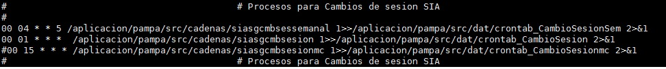
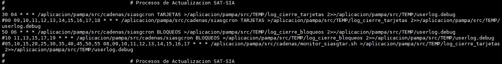
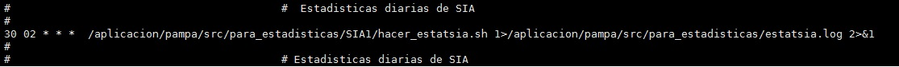
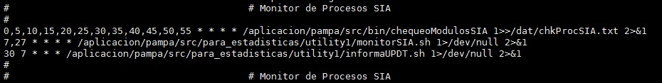
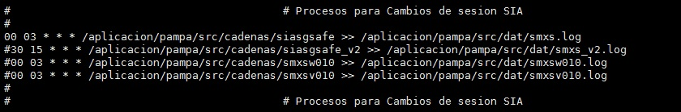

Flujo Transaccional SIA

Como ya sabemos, SIA es el front autorizador de tarjetas de créditos en la institución Banco de Venezuela.
Actulamente, existe 3 canales de comunicación que viaja las transacciones provenientes de la red que son las siguientes:
Consorcio Credicard
- Procesa operaciones nacionales POS terminales propios.
- Procesa operaciones de tarjeta de crédito Visa y Mastercard.
Visa
- Procesa operaciones de tarjeta de crédito Visa.
- Procesa operaciones nacionales ATM terminales propios.
- Procesa operaciones nacionales POS y ATM otros terminales.
- Procesa operaciones internacionales POS y ATM otros terminales.
Mastercard
- Procesa operaciones de tarjeta de crédito Mastercard.
- Procesa operaciones nacionales ATM terminales propios.
- Procesa operaciones nacionales POS y ATM otros terminales.
- Procesa operaciones internacionales POS y ATM otros terminales.
- Diario: proceso de mantenimiento de las tablas donde guarda las operaciones diarias.
- Semanal: proceso de mantenimiento final del detalle de las operaciones y las mismas las almacenas hasta 15 días.
- Tarjetas: proceso para realizar la carga de tarjetas de nuevos tarjetahabientes.
- Bloqueos: proceso para actualizar las condiciones de bloqueos de los tarjetahabientes.
Ambos procesos se actualizan en SIA por un archivo que envía el Mainframe vía FTP.
- NEW Archivo Estadísticas: muestra vía correo las estadísticas de las autorizaciones realizadas a la fecha indicada.
- NEW Archivo Estadísticas Autorizaciones: muestra vía correo las estadísticas de las transacciones autorizadas realizadas a la fecha indicada.
- NEW Archivo Estadísticas Autorizaciones por Hora: muestra vía correo las estadísticas de las autorizaciones realizadas a la fecha indicada y por horas comprendidas en el proceso.
- NEW Archivo Estadísticas Domiciliaciones por Hora: muestra vía correo las estadísticas de las autorizaciones de pagos domiciliados realizadas a la fecha indicada y por horas comprendidas en el proceso.
- NEW Estadísticas Stand-In Canal Off-Line: muestra vía correo las estadísticas de las autorizaciones realizadas vía Stand-in a la fecha indicada.
- NEW Archivo Relación 911: muestra vía correo las estadísticas de las autorizaciones por falla en comunicación realizadas a la fecha indicada.
Realiza una ALARMA si algún canald e comunicación dentro de la aplicación presenta un tipo de problemas.
Realiza el mantenimiento de las tablas históricas generadas por el cambio de sesión y envia un backup en archivo plano para su backup/delete vía Veritas NetBackup.
Genera un archivo donde guarda la información necesaria o requerida por cada franquicia para que puedan determinar si cada una de operaciones puedan ser un posible fraude.
